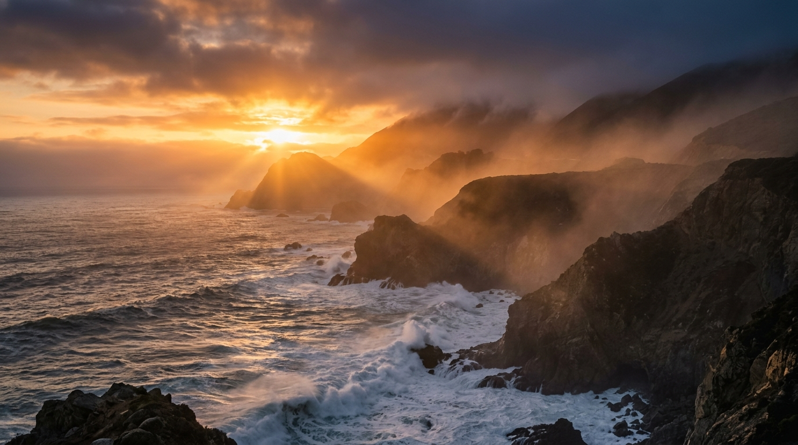
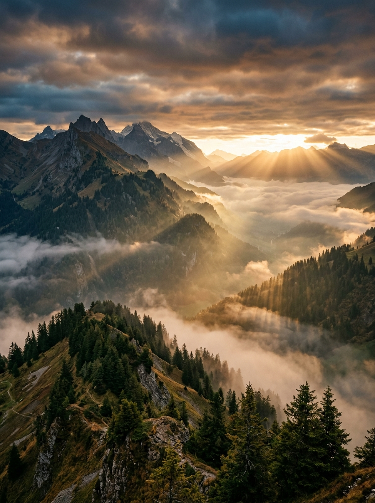
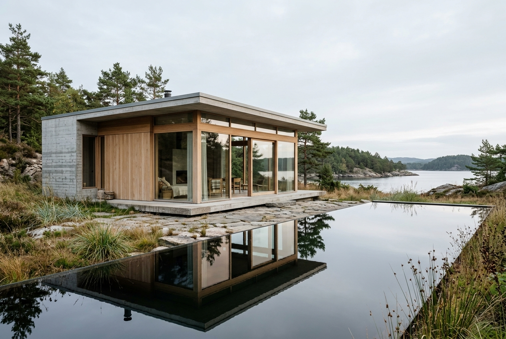
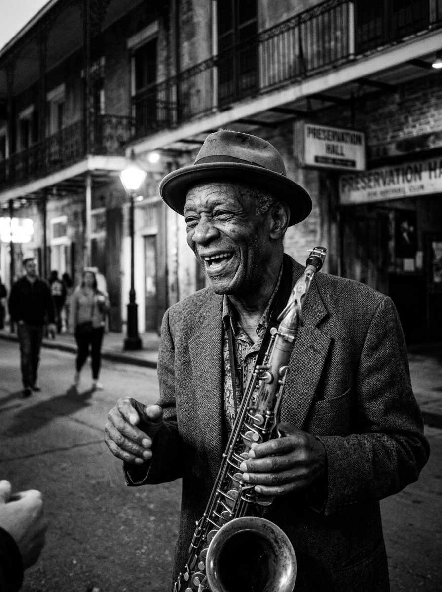
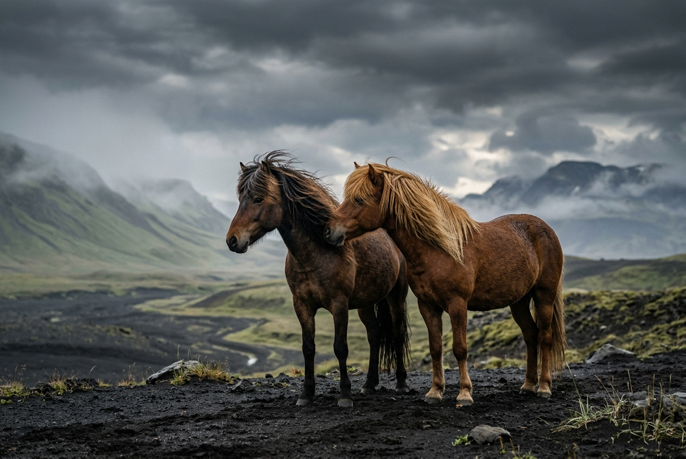
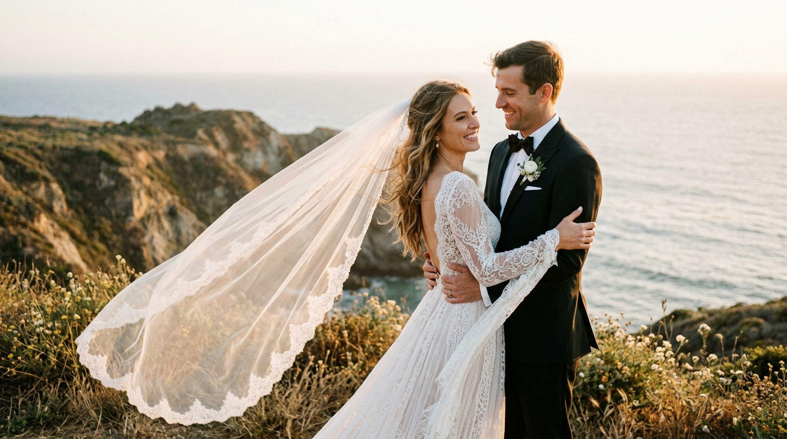
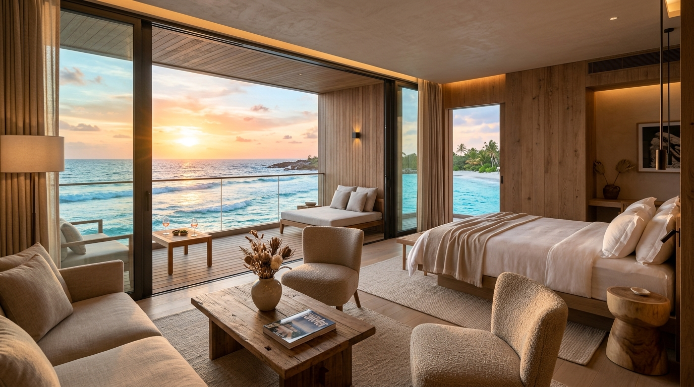
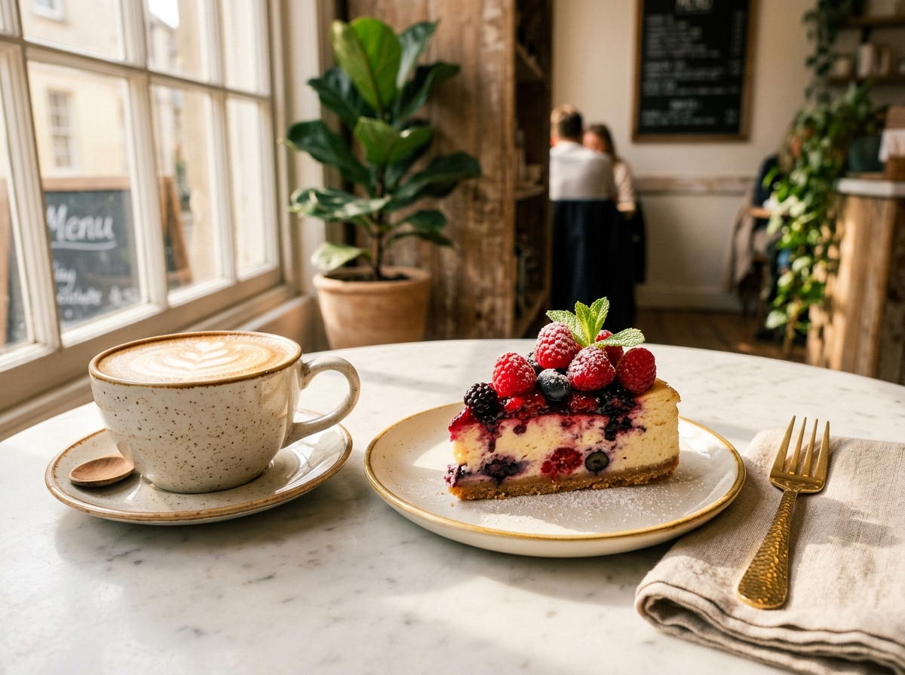

Pacific Breakers at Golden Twilight
Crashing sea stacks illuminated by breaking rays through coastal fog.

Crashing sea stacks illuminated by breaking rays through coastal fog.

Bernese Oberland valleys submerged under heavy morning inversion fog.

Modern coastal sanctuary framed by coastal pine forests and granite bedrock.

Candid street rhythm captured under warm gas streetlamps in New Orleans.

Quiet companionship across the desolate black sand desert of Vik.

Golden hour intimacy atop the wind-swept coastal bluffs of Big Sur.

Exploration of volumetric knit silhouettes and soft directional rim illumination.
Tailored portraiture highlighting authentic eye catchlights and calm authority.
Macro clarity capturing refracted light caustics and fine condensation beads.

Seamless blend of Cycladic whitewash, natural linen, and twilight coastal sea.

An ode to slow mornings, microfoam texture, and golden pastry layers.
For visual direction, editorial commissions, exhibition prints, or private sessions, reach out directly: